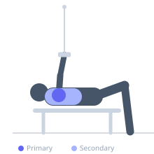
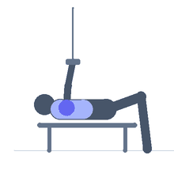

Exercise guide / High Cable Rear Delt Fly
High Cable Rear Delt Fly
The high cable rear delt fly is performed with both cable pulleys set at above-head height, gripping the opposing handles and pulling them down and outward in a horizontal arc to the sides of the body. The high-to-low angle applies a unique line of force on the posterior deltoid and scapular retractors compared to low-cable or dumbbell variations, targeting the rear deltoid from a mechanically different angle and improving overall posterior shoulder development.
Primary muscles
deltoid posterior
Secondary muscles
rhomboid major
trapezius middle
infraspinatus
Equipment
Cable Machine (Dual Pulley / Functional Trainer)


Starting position
- Stand between a cable crossover station with both pulleys set above head height. Reach across and grip the left pulley handle with the right hand, and right pulley with the left hand (cables cross). Arms extended upward.
Setup
- Because cables cross, the motion pulls them apart and downward. Use very light weight — rear deltoids have limited absolute strength.
Steps
- Step 1: Cross-grip the cable handles above head height. Arms extended overhead.
- Step 2: With arms remaining straight (slight elbow bend), pull the cables downward and outward.
- Step 3: Continue the arc until arms are level with the shoulders and wide to the sides.
- Step 4: Squeeze the rear delts at the bottom of the pull.
- Step 5: Return under control to the starting overhead position.
Coaching cues
- Straight arms — pull with the rear delts not the elbows
- High to wide
- Squeeze the back of the shoulder at the bottom
Breathing
- Exhale on the pull, inhale on the return.
Range of motion
- From cables crossed overhead to arms wide at shoulder height.
Tempo
- 2-1-3-0
Common mistakes
- Bending the elbows too much — the arms should remain nearly straight throughout
- Using too heavy a load, which recruits the traps and lats instead of the rear delts
Safety
- The cables cross above the head — ensure the cable crossover station height is appropriate before starting
Training
- hypertrophy: 12–20 reps
- hypertrophy: 3–4 sets
- Rest: {'hypertrophy': 60}